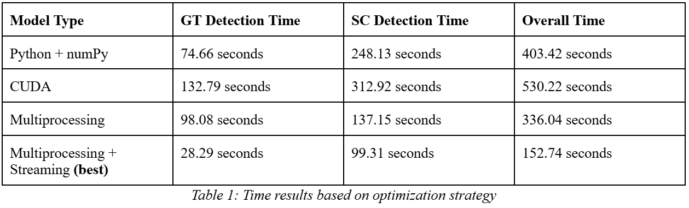

Computer Vision
Sports Replay Extraction Model
Project Description
This project addresses the inefficiency of manually identifying sports highlights by creating an automated system to extract replay segments directly from broadcast videos. Developed for a Master's in Data Science project at NYU, the model uses a non-learning-based computer vision approach to analyze visual patterns within the broadcast. Adapted from a framework by Javid et al. 2016, the system identifies replays by detecting the gradual transitions (like fades and dissolves) that typically mark their beginning and end, and verifying the absence of score captions, which are usually only present during live gameplay. The primary contribution of this work was to optimize this framework, focusing on improving computational efficiency and overall performance through techniques like multiprocessing and data streaming.
Results
The final optimized model was tested on five minutes of the 2022 NFL Super Bowl, which contained 35,965 frames. The system demonstrated strong performance, achieving an overall accuracy of 92.97% and a replay class F1-score of 78.96%.
A key focus of the project was performance optimization. Several methods were compared against a baseline Python implementation:
- CUDA (GPU Acceleration): This approach was unexpectedly slower than the baseline, which was likely due to the overhead of data transfers between the CPU and GPU and other compatibility issues.
- Multiprocessing: By parallelizing the Score Caption (SC) detection across multiple CPU cores, this method significantly reduced processing time compared to the baseline.
- Multiprocessing + Streaming: This combined approach yielded the best performance. By reading the video data in streams rather than loading it all into memory, this model minimized memory usage and optimized data handling.
The final optimized model was approximately 2.6 times faster than the initial baseline, highlighting that efficient CPU parallelism and data handling were more effective for this task than GPU acceleration.